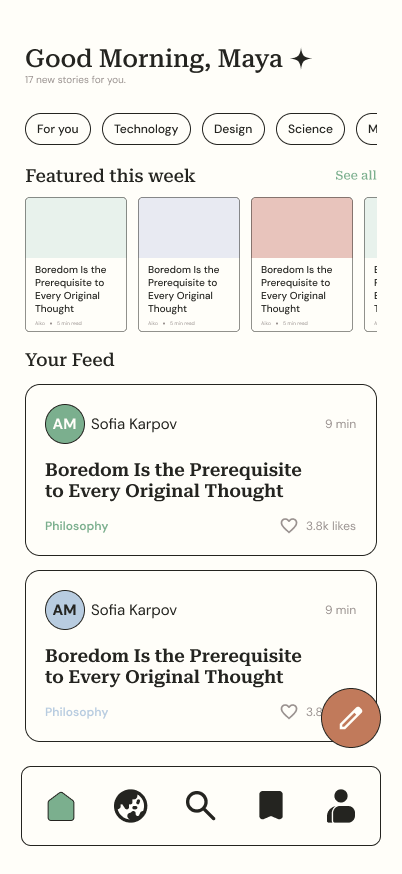
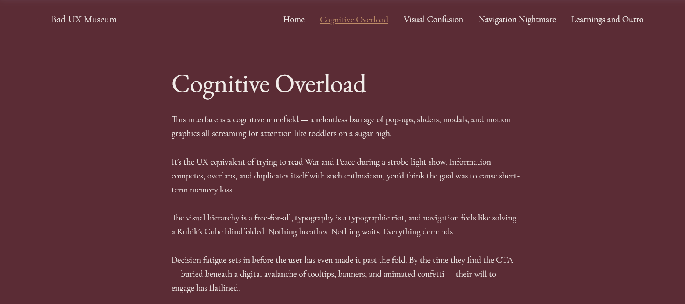
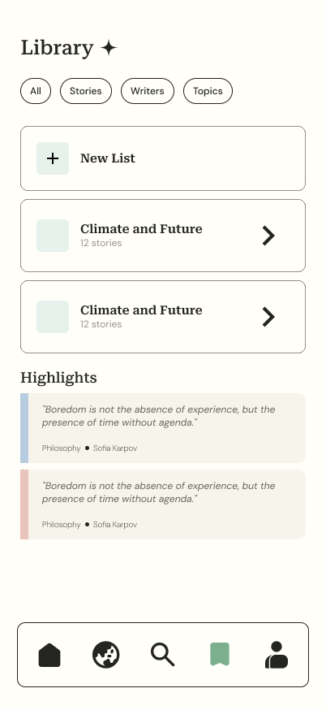
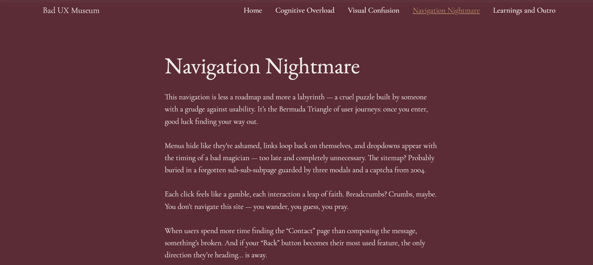

Home Feed
A simplified home feed with clear hierarchy and personalized sections improves discoverability and reduces overwhelm.
From Clutter to Clarity
Tools Used: Figma, Canva
Medium is known for high-quality long-form content, but the mobile experience often feels overwhelming due to content overload, weak personalization, and interruptions in reading flow. This redesign focuses on creating a cleaner, more intuitive reading experience that improves discovery, readability, and engagement.

A simplified home feed with clear hierarchy and personalized sections improves discoverability and reduces overwhelm.

A distraction-free reading mode enhances focus with better typography, spacing, and customizable preferences.

Organized saved articles with folders and a “Continue Reading” section help users easily revisit content.

Smarter, topic-based recommendations provide more relevant content while giving users control.
The visual system uses calm, editorial tones to support long-form reading while reducing eye strain and improving focus.
Typography is designed to create a strong editorial hierarchy while ensuring long-form readability.
The Future of Reading
Designed for clarity and depth
Clean structure improves navigation
This redesign focuses on reducing cognitive load while improving readability.
Supporting text for metadata and UI labels
This redesign emphasizes simplicity in content-heavy platforms. By reducing clutter and focusing on clarity, reading becomes more immersive and enjoyable.